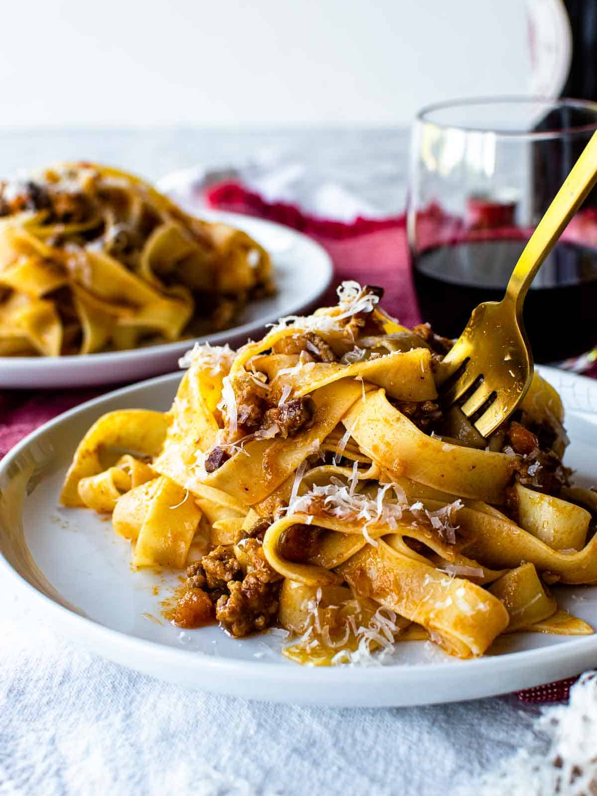
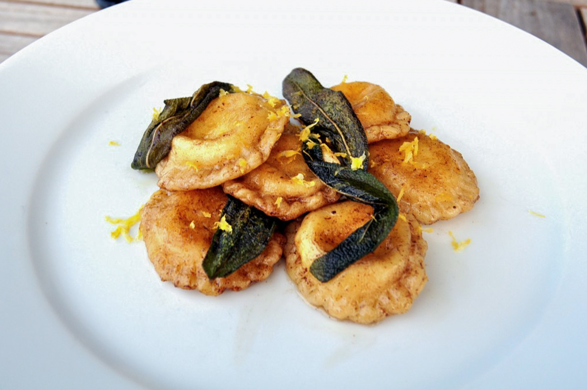
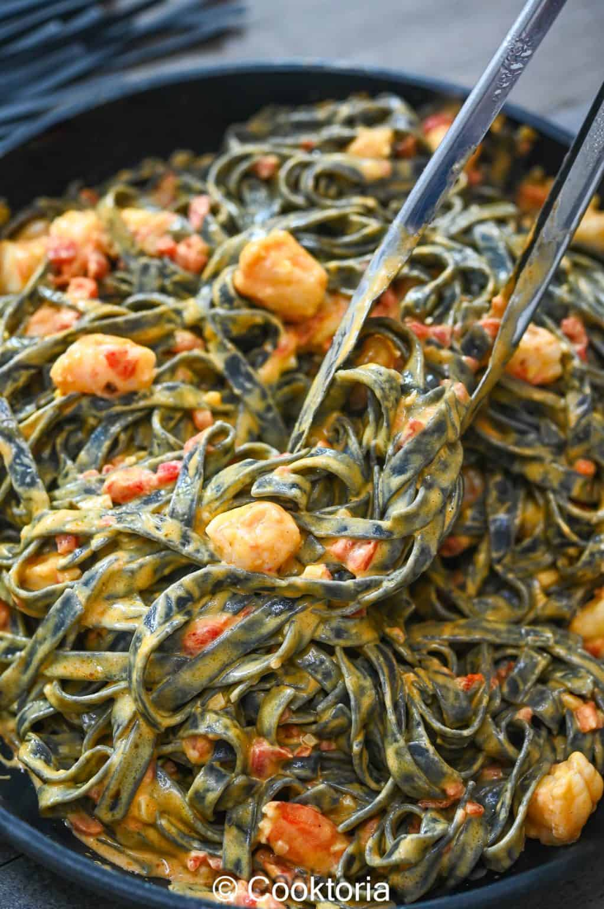

Welcome to my pasta gallery! All dishes were created and photographed by me. Each plate showcases my passion for handmade pasta, vibrant flavors, and seasonal ingredients. From classic Bolognese to bright lemon ricotta ravioli, every dish tells a story of creativity and technique.
Learn more about pasta making from the following sources: